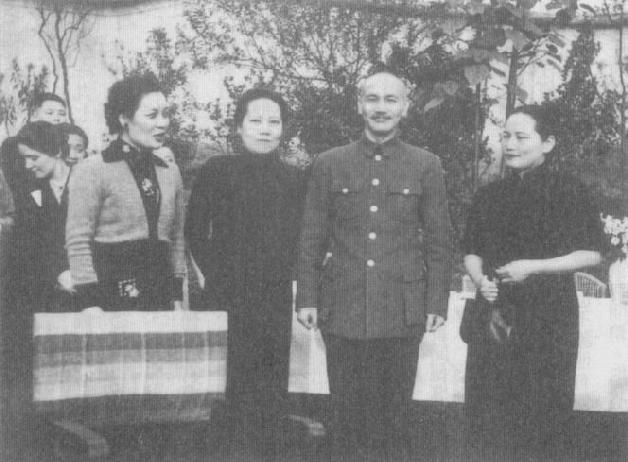
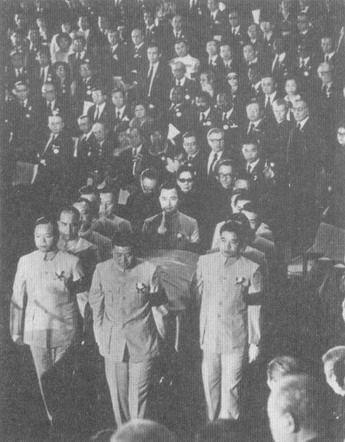

|
前一页 后一页 回目录 回主页 |
第十三章：尼克松及晚年 1969年11月，蒋介石在日记写下：“明知尼氏卖友陷共政策已定……但不能不尽我心力与人事。”12月12日，他又说尼克松“与匪已约期密谈。”这时候，除了尼克松和季辛吉最内圈的亲信，还没有人晓得，拜访毛泽东是这位美国总统秘密计划的一部分。日记里这些记载和其他的评论再度强烈显示，周恩来已经把北京和华府进行秘密沟通的消息，传话给蒋。虽然蒋在日记里两次提到尼克松计划“放弃”台湾，此时的他似乎仍认为尼克松还不会抛弃台湾，只会牺牲金门。蒋认为这是自杜鲁门以降，历任美国总统都希望的那套“两个中国”政策①。 ① Chiang Diaries, December 12, 13, 25, 1969, Hoover, box 75, folder 9, 10. 12月17日，新任驻华大使马康卫来到士林官邸，转达尼克松对蒋总统11月去函的口头答复。马康卫首先强调中国共产党政权对东亚仍持续构成威胁，美国“不会改变它的警戒态度”。他说，同时，美国政府“认为它有责任采取一切务实的、审慎的步骤，降低（本区域的）紧张”。基于此一精神，美国将“认真地与北平（北京）政权建立有价值的对话”①。 ① FRUS (1969-1976), vol.17: China, 1969-1972, pp.147-149. 马康卫解释说，白宫“决心继续寻求可用的接触管道，蒋总统身为美国的友人和盟国，应该充分明白此一政策的性质和目的”。马康卫代表尼克松说话，以“最正面、明白的措词”向蒋总统担保，美国坚守它对中华民国共同防御的承诺。与大陆改善关系的目标绝不会“稀释此一承诺”，也不会“打击或伤害到中华民国任何基本利益”，更不会“妨害到我们两国政府共同合作的建设性发展，我们希望气氛不因大陆侵略之威胁而蒙受阴影”①。 ① 同上注。 蒋“全神贯注毫不打岔地用心”听马康卫的陈述。将近30年来，蒋频频向美国人说教，说明他为何认为他们对待中共太过天真；又，20多年来，蒋认为有一群具分量的美国人勾结英国人，阴谋把美国推向中共，远离台湾及其政府。但是，听完马康卫的话，蒋静静“思索了几秒钟”，然后表示“他因确认美国坚决支持中华民国的政策没有变化，再度感到放心”。他唯一担心的问题是第七舰队不再巡防台湾海峡，马康卫答说，尼克松授权他表示这个行动“纯粹出于经济考量”。他又引述尼克松的话说，共产党对台湾海峡中华民国船只任何“无理、无端”的攻击，“不会受到忽视”。蒋对此一照本宣科的保证表示“感谢”①。 ① 同上注，p.150。 这次谈话又是一个例子，说明蒋早已明白全球政治正在产生最基本的转变，他也务实地估算到若大发雷霆，只会替自己制造更多问题。此外，蒋可能也认为尼克松和北京修好的举动，要是在中共党内及解放军引起反毛声浪，很可能会失败。中、苏关系也可能爆发为全面战争，其后果之惨重难以预料。 他的谨慎还有别的理由。关键点是尼克松在和毛泽东达成的协议中要如何处理台湾地位问题，以及美国对台军事关系。蒋有信心，中共不会接受两个中国的安排。因此，如果尼克松的和解秘藏了两个中国的剧本，整个进程将脱轨不前。蒋在11月份的信函中再次争取幽灵式战机和其他先进武器；他在圣诞节时获悉尼克松否决了国会出售幽灵式战机给台湾的法案。这是他生平所遇“重大打击之一”①。 ① Chiang Diaries, December 25, 1969, Hoover, box 75, folder 10. 次年春天，蒋经国告诉季辛吉，国府情报人员“在香港获悉中国共产党可能提议更改华沙会谈的地点，甚至可能主张移到北京举行”。季辛吉的助理何志立（John Holdridge）向季辛吉和尼克松呈报，蒋经国“试图暗示我们，中华民国政府与中共有情报接触”；何很可能是对的。何志立为台北的目的可能是要“提醒我们不应该不拿国民政府当一回事”；从北京的观点来看，何表示：“这个情报插曲正好提醒我们，共产党在当前会谈的即时策略性目标，或许是想试探能否在我们和（国府）之间塞进一把刀刃。”① ① FRUS (1969-1976), vol.17: China, 1969-1972, p.198. 可是，何志立没观察到周、毛决定把此一敏感情资传递给蒋的主要原因。第一，他们很可能希望让蒋明白他已被美国抛弃，因而鼓励蒋同意与共产党政治解决。第二，也是最直接的理由，他们可能希望促成双方坚定“反对两个中国”的共识。周和毛晓得，蒋和他们一样，都是民族主义者，因此既然华府、北京高阶层会谈已近，周有必要传话给委员长，透露北京领导人绝不会接受两个中国的架构，希望蒋也采取相同立场。近期内，这两个旧日的同志、友人一定重新确认过彼此的共同观点，以及各自政府对此关键议题的主张。因此，中共领导人希望再次搭起国共联合阵线的舞台——这次是实质的、不经宣布的联合阵线，仅适用于对中国领土完整性的共同立场，但是也暗示对中共未来动用武力做了某些限制。12月是中、美关系非常忙碌的一段时候。季辛吉向尼克松报告，巴基斯坦总统亚雅汗已“把他的想法传递给中方”，透露美国“预备与共产中国关系正常化”。北京表示感谢巴基斯坦传话，并以释放2月间误入中国领海的两名美国游艇客做为回应①。12月25日，国务院公开承认台海巡逻的改变②。为了加重对北京的诱惑，尼克松批准销售美国谷物给中国，并取消美国人前往大陆旅行的许多限制③。 ① 同上注，p.154。 ② James C.H.Shen（沈剑虹），The U.S. and China: How the U.S. Sold Out Its Ally (Washington, D.C.: Acropolis Books, 1983), p.67. ③ Roy Medvedev, China and the Superpowers (New York: Blackwell, 1986). 这一年年底，蒋在日记中写下与即将来访的美国副总统安格纽（Spiro Agnew）会谈的谈话重点，规划他的危机处理策略，并没再提起打“苏联牌”的想法。蒋打算告诉安格纽，在评论美国对华政策变动时，他于公开场合的讲话将与私下谈话有别。甚且，“不使尼氏为难，并绝无损友利己之念。”他的谈话重点之一是，“美对联合国认共匪之参加政策，希望能诚意与我事先说明，我决不使美国为难。”① ① Chiang Diaries, December 28,（下周计划）、（每周反省）1969, Hoover, box 75, folder 10. 面对势在必行且范围广泛的美、中和解，这是一个了不起的默认姿态。可是当蒋和安格纽真的碰面时，他又无法像日记所写的那样坦诚交换意见，并充分表达对无可避免情势之默许。同时，尽管希望渺茫，蒋仍继续祈祷命运之神的眷顾，希望能为他本人及中华民国带来好运。可是，次月又发生一项重大打击——台湾最出名的台独运动主将彭明敏教授，逃出软禁，潜往瑞典。蒋认为这是美国中央情报局搞的鬼，也就是说，尼克松计划在海外培植彭明敏领导台独运动，并以两个中国架构为基础与大陆和解①。 ① 2008年4月19日，钱复在台北受访。 次月，循美国1969年1月在华沙会谈所提的建议，中国同意接待“美国总统特使”“进一步探索（美、中）关系的基本原则”。中方明白表示，所谓“基本原则”就是台湾问题；这个问题解决了，其他问题就好办。他们也极清楚地表示，解决台湾问题绝不能摆在“两个中国”或“一中一台”的脉络下去谈判①。虽然华沙会谈结束，新闻报导对其内容却颇多臆测，特别是会谈已经停止了2年，忽然又重新召开，显然美中双方在某些议题方面已有重大进展②。 ① FRUS (1969-1976), vol.17, China, 1969-1972, p.182. ② 与涉及会谈的美国外交官员的许多谈话。 基辛吉告诉尼克松，鉴于与北京交涉已有成果，“我们或许需要（对国府）更坦白一点”。季辛吉担心共产党或许会把华沙会谈的情况扭曲后泄漏给台北方面。美国人也晓得波兰情报机关有监听会谈进展。国务院发了两封电文给台北，将提供给国府驻华府大使馆的华沙会谈内容简报，做个总结。根据国民政府一位前任外交部长的说法，这两份“误导”的电文忽略美中对话所有的关键内容。它们错误地暗示，美方认为与中国关系若要有进展，“放弃使用武力”依然是关键条件①。 ① State Department cables 27045, February 24, and 028259, February 26, 1970 to Amembassy Taibei, FOI request. “误导”这词来自2008年4月19日，钱复在台北受访，另参见FRUS (1969-1976), vol.17: China, 1969-1972, p.186. 蒋在3月16日的日记中记载，蒋经国就2月份的华沙会谈口头报告指出，美中双方已同意“将在华盛顿或北京再开所谓美匪大使级会谈”。2天后，蒋在国民党中常会上，再度“听取（经国）对（华沙）美匪会谈内容”。报告指出美方在会谈上提供“对台湾和平解决之荒谬之建议”①。当时，外界仍然不知道美方和中共已谈到在北京或华府举行会谈，也不知道美方已就台湾问题提出一些建议，这些资讯也完全不在国务院对国府驻美大使馆的简报当中。 ① Chiang Diaries, March 16, 18, 1970, Hoover, box 75, folder 14. 周恩来立刻就把华沙会谈的情况转告老蒋。听到这些消息后，蒋发誓“惟待其对我放弃此一协定，方能实施我反攻大陆之国策也”。蒋在几个月前才告诉罗吉斯，说台湾没有能力进攻大陆。因此，他的意思是和美国决裂后，美国再也无法牵制他可能对大陆发动的任何动作①。 ① Chiang Diaries, March 18, 1970, Hoover, box 75, folder 14. 蒋在3月致函尼克松，继续佯装不知道真相，谈论尼的“善意政策”。他声称并不反对华沙会谈，但强调二次世界大战期间及其后，美国和中共屡次谈判皆失败。不过蒋最担心的是，美国可能考虑在和中共的联合公报中，“共同发表和平五原则”，深怕最后将合理化北京动武让台湾回归祖国的举动①。可是，美方在华沙已同意在涉及台湾问题的协议中可引用“五原则”。尼克松答复蒋说，他必须确认美国与中共之间的问题是否不可能透过谈判去解决。尼克松总结表示，无论如何，美中会谈不会影响到美国与国府间的友谊与密切合作②。蒋知道这不是实话。但是他只能假装不知道尼克松的意图，强调对未来有信心，相当乐观。蒋告诉僚属说：“我们必须庄敬自强》”③ ① FRUS (1969-1976), vol.17: China, 1969-1972, p.187. Chiang Diaries, March 1, 1970, box 75, folder 14. ② 同上注，pp.192-194。1970年3月27日的事件，请见pp.193-196。 ③ 1995年4月28日，俞国华在台北受访。2008年4月19日，钱复在台北受访。 1970年4月底，行政院副院长蒋经国抵达华府正式访问，受到等同政府首长级的接待。他住在白宫对面专门接待来访国王、女王、总统、总理等贵宾的布莱尔宾馆，并与尼克松进行了50分钟不寻常的单独会谈（没有任何其他美国人在场）。可是，老蒋在国内对于儿子受到如此高规格待遇，却感到“怀疑忧惧”①。季辛吉和国务卿、国防部长后来加入在椭圆形办公室的会谈，会谈又进行了半小时。蒋经国一度告诉尼克松，台湾省是“亚洲的中心问题”，中国共产党可能对台湾发动珍珠港式的突击。但是尼克松根本不理会此一预测，蒋经国在后续行程中也不再提起。蒋经国并没有抗议或抱怨美国对中政策近来的发展，也就是在这个时候，透露他从香港的消息来源获悉，共产党可能建议把美中双边会谈地点改到北京②。会谈结束、转往参加盛大晚宴之前，尼克松又重申支持中华民国。他说，他和委员长相知相交已有23年，“美国绝不会出卖你们”③。 ① Chiang Diaries, April 22, 1970, Hoover, box 75, folder 15. ② FRUS (1969-1976), vol.17: China, 1969-1972, p.197. ③ Richard M.Nixon, Nemoirs (New York: Gosset and Dunlop, 1978), p.547. 虽然明知道美国人在耍什么，蒋经国却没有泄漏对尼、季二人善意的任何怀疑。第二天，季辛吉和小蒋会谈时宣称“我们深信要支持友人”，然后花时间解释尼克松总统“在棋局里总是先想到四步以后”，因此他的战术决定有时候令人看不懂。他又说明他和总统如何“经由多次演炼”才有所动作，因为“没有必要露出我们的底牌”。听了季辛吉这番吹嘘尼克松深藏不露、善计谋的本事之后，蒋经国说，蒋总统认识尼克松总统逾20，“倾向认为他了解他，也知道他的想法。”① ① FRUS (1969-1976), vol.17: China, 1969-1972, p.202. 基辛吉可能认为这是暗示，代表蒋介石明白美国人的中国计谋用意何在。为了搞清楚，基辛吉次日不带译员，穿过宾夕法尼亚大道来到布莱尔宾馆与蒋经国以英语密谈。蒋经国的英文能力不差，以这场八成是单向的对话而言，已足够了。除了暗示华沙会谈确实将移到北京或华府；，季辛吉可能也向蒋经国保证，美中任何协议都不会有两个中国的脉络，美国也会为台湾的联合国会籍奋斗，但不会力保安理会席次。国府一名官员问蒋经国，究竟在布莱尔宾馆还谈了些什么，他微笑不语①。 ① Shen（沈剑虹），U.S. and China, p.439. 华府会谈之后，蒋经国飞往纽约向东亚美国商工协会发表演讲。当他正要进入广场饭店时，两名年轻的台独激进派从大理石柱后跳出来，其中一人朝蒋经国开了一枪没打中，旋即被警员推倒在地。蒋经国继续走进饭店，只字不提此事，镇静地完成了演讲。这件事使他在台湾的国民党圈子被视为英雄。 1970年5月，尼克松下令大举轰炸柬埔寨，美国和南越联军并大举进入柬埔寨，摧毁越共和北越部队的供应基地和据点。这个动作一度使蒋介石对尼克松观感大变。原先他一直对美国在越战的前途持悲观态度，也不看好尼克松对中国的企图；现在他认为在柬埔寨此一“勇敢”行动，意味尼克松的反共政策丝毫未变。他认为，这代表尼克松对北京大和解的构想现在可能已经不存在，或许根本就是一项计谋；毕竟尼克松了解，只有“我们摧毁了共匪”，才能确保世界和平。 蒋在战术上是个悲观主义者，不过从来不放弃。他义无反顾的坚持目标，因此在关键时刻是个天真的乐观主义者。他甚至不顾自己先前的判断，首度忖思国军部队应否投入越战。柬埔寨行动使得华府和北京之间，以及北京和台北之间的秘密接触暂时中止。5月31日，蒋比较务实地写下，尼克松“对政治权术无所不为……惟其内心对反共不致完全放弃，据此一点尚可有希望。”① ① Chiang Diaries, May 31, 1970, Hoover, box 75, folder 16. Jay Taylor（陶涵），The Generalissimo's Son, pp.299-300. 同样在5月间，蒋经国亲访南越，评估战局前景。他判定父亲多年来一直都是对的：只要中共和苏联源源不断地提供北越所需的一切援助，美国人打不赢这场战争。只要美国继续提供必要的物资支援，南越似乎也有充足的兵力和武器可以挡住北越和越共。可是，西贡统治者是否有足够的民意支持、军方有没有必胜的精神，都教人怀疑；美国国会和美国人民源源不绝地供应军援的意愿，同样令人担心。台湾要学的教训，十分清楚。 尼克松曾经警告季辛吉，不能让中方觉得美国人求和心切，但是当毛泽东安坐太师椅仔细斟酌华府的倡议时，其实尼克松仍心急如焚。6月间，尼发出另一个讯息给北京，表示他预备建立替代的直接管道，处理两国之间最敏感的议题，并且再次建议由他派一位高阶个人代表和中国领导人直接会商①。可是，当年夏天，中国传出来的讯息却是矛盾的。周恩来释放了在中国囚禁多年的美国主教华许（James Walsh），可是林彪派的总参谋长黄永胜却公开说，舒缓中美紧张系“绝对没得谈”。大约这时候，中共军方试图在公海上击落一架美军C-130运输机；季辛吉研判可能是激进派要破坏周恩来的努力而干的②。 ① FRUS (1969-1976), vol.17: China, 1969-1972, p.220. ② 同上注，p.225。 这些迹象显示中共领导圈内，对究竟苏联或美国谁才是中国头号敌人这个问题，发生激烈斗争。林彪和激进派声称，接受尼克松特使到北京会粉碎中国的革命信誉。另一方面，周恩来及其盟友则把矛头指向苏联在中国北方边境陈列重兵的举动。7月间，在毛泽东同意下，周恩来显然又恢复了和蒋的秘密接触，蒋这才看清楚，对尼克松轰炸柬埔寨一事，他完全判断错误了。那只是一个暂时性质的计谋。他也认为尼克松决定从越南撤出美军，是为了国内政治效果考量。蒋又开始写说，尼克松意图和台北终止关系、与北京建交①。同时，中共领导阶层内部的斗争也在1970年8、9月中共中央委员会集会时台面化，毛泽东在会中拍板定案，宣布苏联是中国的主要敌人，也通知他的同志中美两国正在进行谈判，试图恢复关系。 ① Chiang Diaries, July 27, 31, 1970, Hoover, box 75, folder 18. 10月1日，毛花了5小时接受作家史诺的访谈。他终于承认自己被过分神化，表示“亲密战友”林彪称呼他“伟大的导师、伟大的领袖、伟大的最高统帅、伟大的舵手”，这头衔太荒谬了①。让季辛吉觉得更有趣的是有一则报导说，“毛告诉一个法国代表团，中共绝不接受两个中国”，但可以“和这个实际状况共存”②。美国驻香港总领事馆9月初有一份分析指出，中国外交政策的新方向“可能提供改善关系的机会”③。 ① Chen Jian（陈兼），Mao's China and the Cold War (Chapel Hill: University of North Carolina Press, 2001), p.256. ② FRUS (1969-1976), vol.17: China, 1969-1972, pp.225-226. ③ 同上注，p.228。 10月间，美国发入境签证给1970年1月逃亡到瑞典的台独运动领袖彭明敏，蒋痛斥尼克松“虚伪欺诈，不诚无信矣”。发签证给彭明闵，意味美国“依然试图渗透、推翻我们的政府”。他认为，美国“乃谓共产阴谋渗透气内部”。蒋回过头重读经国4月间和尼克松会谈的报告，更不齿尼克松的“伪善和欺瞒”①。 ① Chiang Diaries, September 20, 25, 26, （每月反省(9月)），October 13, 30, 1970, Hoover, box 76, folder 2, 3. 对两蒋父子来讲，最不能理解的是美方竟然事先没警告就发签证给彭明敏。毕竟4月间蒋经国访美，在纽约企图行刺他的两名台籍青年就是彭明敏台独组织的成员。委员长亲函副总统安格纽请他介入本案，但是美国官员讷讷地解释，依据美国法令，无法拒绝彭明敏入境①。两蒋认定当年安排彭明敏逃出台湾的就是中情局，因此担心“一中一台”阴谋才是尼克松意图的核心，即使可能危及美中和解也在所不惜。这个想法可能使得蒋介石重启与周恩来配合的兴趣，好扼杀此一阴谋。 ① FRUS (1969-1976), vol.17: China, 1969-1972, p.230. 台湾不久又遇上一连串失利。首先，加拿大承认北京政府与台北断交。接下来，美军顾问团照会国府国防部，下一个会计年度的军援项目经费将从3000万美元大幅降至700万美元。两蒋父子获悉所有的投资项目（意即新或替补的军事设备）将被删除，供作业与维修用的经费也完全砍掉，更加“震惊”①。10月22日，蒋经国告诉马康卫大使，美方此一突如其来、片面的决定实在是“岂有此理”，“其中一定有政策意涵”②。接着蒋经国话锋转到彭明敏入境签证的许可，指它是“过去20年中美关系最伤害之事件”。他说，台湾方面认定美国同情台独运动③。 ① 同上注，p.232。 ② 同上注。 ③ 同上注，p.233。 事实上，真相没那么复杂。美国政府从上到下只是越来越不重视长期盟友中华民国的利益和感受罢了。马康卫和安格纽一样，也不是白宫拉拢、交好北京政策的核心，他对小蒋说，尼克松总统和安格纽副总统的“性格、信念和智慧，就是这个政府对其承诺坚定不移的保证。”蒋经国板着脸答说，他的政府“的确在尼克松总统和（安格纽）副总统的领导中找到宽慰和保证。”① ① 同上注，pp.234-235。 有鉴于台、美关系即将生变，蒋经国更换了各军种总司令，并且改组内阁，起用与他关系更密切的官员。内部安全再次抓紧，9个在亲国民党媒体工作的外省籍知名记者被控涉嫌参加匪谍组织。身为台湾秘密发展核武计划的大总管，他成立一个新单位“核能研究中心”负责开发核能发电厂。核武部门成为新中心底下的秘密单位，但是中情局潜伏的特务仍在里头工作①。 ① FEER 71, no.10 (March 6, 1971): 31. New York Times, December 20, 1999. 蒋经国接见马康卫时刻意展现的怒意倒是赚回一些补偿。1970年10月25日，行政院长严家淦（应该是副总统兼院长）拜会尼克松时，尼克松悄悄告诉严，他预备向国会提出追加预算案，试图恢复从台湾项下删除的“极大部分”军援。会谈结束前，尼克松告诉严家淦，美国对共产中国的态度“实际上没有变”。他说，华府只是保持通话管道畅通，但是“没有任何幻想”。不过严家淦前脚才走出椭圆形办公室，尼克松就在同一天见了来访的巴基斯坦总统亚雅汗，尼告诉他“我们十分需要和中国开启谈判”，并要求他向中方传达美国总统希望派特别代表到北京访问的意愿。次日，尼克松和季辛吉又力促罗马尼亚总统西奥塞古，“担任（和北京的）调停人”。12月，毛泽东向史诺表示，他乐意与尼克松一谈，不论他是游客或是总统身分①。 ① FRUS (1969-1976), vol.17: China, 1969-1972, pp.237-238. 11月份的国家情报评估宣称，“北京不期待中美关系早早有重大改进”①。但是，美国驻香港总领事馆还是认为中国很可能出现重大的外交政策转变，反映其领导层内严重分歧，而且分歧还在扩大②。更重要的是，1970年国务院内流传的公文以及外国使馆和联合国之间的函电，大多认定中国代表权问题必须透过一中一台方式解决。 ① 同上注，p.241。 ② 当时我在美国驻香港总领事馆，负责报告中国的国际关系，包含中美关系。 同时，美中台关系的快速演变继续挑动中苏关系变化。苏联明白尼克松和毛泽东团队玩的地缘政治游戏，他们不想被推到局外。苏联在当年稍早略表姿态之后，北京和莫斯科双方的大使都回到对方首都的任所，两党在革命周年纪念时也互传热切的贺电。 一 1970年秋天，蒋家出现一些麻烦。住在上海的宋庆龄传话出来说想到香港见见家人，但又暗示她无法离开中国①。10月，蒋的长孙孝文因糖尿病中风，陷入昏迷。虽部分复原，但他仍住院将近5年。由于孝文的情形，加上蒋夫人久病在身，当年的圣诞节气氛就不怎么热闹了。不过，委员长还是讲了一些中英文双关笑话。当然，蒋家不是人人出问题。孝武在瑞士结识，娶了一名中国年轻女子。孝勇在台湾大学功课也不错。同时，蒋经国一对身世尚未公开的双胞胎儿子，事业也开始顺利起步。孝严投身外交工作，孝慈在法学院授课。 ① 2004年4月，一位宋家成员在加州受访。 委员长发表1971年新年文告，警告台湾民众他们正面对“无尽的困难、危险和痛苦”——的确，他很快又被美国人赏了 一记耳光①。美国要把冲绳还给日本的方案内，包括台北北方无人居住的小岛钓鱼台列岛（日本人称为尖阁群岛），而台北、北京和东京都宣称对它拥有主权。蒋氏父子很生气美方在方案内容修正之前竟没来商量，尤其，最近期的探勘显示钓鱼台周围可能蕴藏大量的石油。本省、外省青年结合起来在台北等城市掀起反美示威，两蒋允许抗议继续，因为这是民族主义和自主独立的表现。此外，他们也想要石油（如果有的话）。可是，白宫只顾着它和北京的秘密交易。1月间，白宫从罗马尼亚接到尼克松致函给周恩来的回音。周恩来说：“尼克松总统……在北京将受到欢迎。”尼克松很快就跟季辛吉说：“我想我们可能表现得太急切了。稍为冷却一下。”次日，美国人读到毛泽东接受史诺访谈的纪录，其内容似乎暗示中国外交政策路线将回到“和平共处”②。 ① FEER 73, no.31 (July 31, 1971): 6. ② FRUS (1969-1976), vol.17: China, 1969-1972, p.296. 关于“稍微冷却一下”请见p.254. Edgar Snow: New York Times, December 11, 1970. 可是，接下来2个月其他地方爆发的事件阻滞了中美接触的进展①。3月间，巴基斯坦陆军强力镇压孟加拉独立战争，1000万名难民涌入贫困的印度孟加拉省。印度和巴基斯坦各有超级大国军力在背后撑腰，眼看就要爆发大战。莫斯科支持印度，北京支持巴基斯坦。由于巴基斯坦总统的调停角色，华府也站到伊斯兰马巴德这一边。 ① FRUS (1969-1976), vol.17: China, 1969-1972, p.254. 同时，蒋经国在台湾继续小步走向民主和更加开放的社会。1月间，政府准许《大学杂志》创刊，该杂志刊载要求中央民意机关全面改选的文章。蒋经国发表演讲，鼓励青年人勇于表达意见和批评，政府也取消了一项遭地方农民反对、可容纳50万人的新市镇开发计划。蒋政府首度因民众在特定议题上有意见而做出回应①。但是，蒋经国划下一道很清楚的界线，一边是批评政治结构和领导阶层，另一边则是拥护台独或试图组织反对党。3月间，警备总部再度拘捕彭明敏同案的两名学生。政府也把一对美国传教士夫妇和一名日本观光客，以涉及台独运动的理由驱逐出境。在台北外交部坚持下，美国大使馆把一名中情局初级官员、4名美国军方人员调离台湾，理由是他们提供顾问意见给本省籍异议分子②。 ① Chen Jian（陈兼），"The Reform Movement among Intellectuals in Taiwan since 1970," Bulletin of Concerned Asian Scholars (July-September 1982): 34. "Popular pressures" see: FEER 71, no.10 (March 6, 1971): 31. ② 关于彭案关系人，取自1996年6月4日彭明敏的同隮谢聪敏，在台北受访。关于驱逐出境，见Sheldon L.Appleton, "Taiwan Portents of Change," Asian Survey, 11, no.1 (January 1971): 68-73. 国务院提出许多扩大美中贸易和旅行的方案,但也警告白宫恐怕会造成对蒋关系的危机。可是，尼克松和季辛吉根本不介意。他们正在寻找机会把对中贸易摆到和对苏贸易同等的基础之上，终于，1971年4月初“契机”出现了。毛泽东有一天半夜醒来，突然决定邀请一支正在日本比赛的美国乒乓球队到中国。为回应这项意味深远的动作，尼克松和季辛吉立刻宣布取消对中国非战略贸易的禁运，同意允许中国访客到美国，准许美国船只载运中国货品，并且开放对中贸易使用美元的管制。蒋形容美国人因毛泽东单纯的乒乓球队邀请，“欢喜得冲昏了头”。他在日记中写下：“他们完全失去了荣誉心。”① ① Chen Jian（陈兼），Mao's China and the Cold War, p.261. 关于“欢喜得冲昏了头”，请见Chiang Diaries, April 16, 1971, Hoover, box 76, folder 10. 同一个月，尼克松和季辛吉派退休大使墨菲（Robert Murphy）到台北，向蒋总统简报华府对于如何处理联合国中国代表权的官方看法。墨菲告诉蒋，由于阻挡中国共产党加入联合国不再可行，美国提议邀北京进入联合国大会，但中华民国仍保持在安全理事会及大会的席次。蒋和尼克松、季辛吉都晓得毛泽东绝不会接受这个方案，蒋回应表示，如果中华民国确实保留安理会席次，他可以接受。墨菲认为这不成问题，还指出中华民国在安理会有否决权；但他后来又说要请示白宫，确认否决权是否无误①。然而，蒋晓得“不可置信邪恶、卑鄙的”尼克松计划让北京取代台北在安理会中的席次，以求在1972年的美国大选获得国内的“政治资本”（蒋的用词）。可是，他要求自己忍耐到明年，某些大事可能会发生，“我们或许可以克服”日益逼近的重大麻烦②。 ① Shen（沈剑虹），U.S. and China, pp.58-59. 关于再向白宫查证，参考2008年4月19日，钱复在台北受访。 ② Chiang Diaries, April 10, 18, 1971, Hoover. 蒋握有肯尼迪总统的书面保证，承诺必要时美国本身将否决中共进入联合国；但现在这一纸保证已毫无价值。被误导的墨菲并不了解白宫真正的想法，他再也没有回复此一否决权问题；3个月之后，季辛吉和周恩来会谈时明白表示，美国将支持北京取得中国在安理会的席次——而不是倒过来的情况——这么一来，台北保证会提前彻底退出联合国。 1971年4月24日，77岁的宋子文在旧金山餐馆用餐时，因骨头梗住而亡故。宋美龄搭机前往美国出席兄长的告别式时，新闻报导传出她的二姐宋庆龄也会出席。蒋介石父子深怕两姐妹要是真的碰头，会掀起北京和台北之间有秘密协议的臆测，于是下令飞机掉头回台北。宋美龄可能对此大为不悦。有机会见到心爱的姊姊，她本来会很高兴的。后来她获悉，华府方面毫无迹象显示宋庆龄曾以任何理由申请赴美签证，和新闻报导说的截然不同①。 ① State cable to Taipei, April 30, 1971, National Archives, RG 59, China Pol, box 2202; Amembassy Taipei cable to SecState, 2537, April 30, 1971, National Archives, RG 59, SNF (1970-1973), China Pol, box 2203.

宋子文是个有争议的人物，但不论他有何缺点，他的事业让人印象深刻。多年来，他坚持推动负责任的财政政策，包括节制军费开销。他长久以来怀抱大志，认为有朝一日或许会继承蒋的大位，但是他在军中、党中的支持度都不够。委员长有很多事（包括他的新儒家热忱）都令世故的宋子文不以为然，但是他佩服妹夫一心一意地追求国家统一、富强。宋子文的脾气和妹妹美龄一样，“在黑暗的抑郁和外放的勇敢之间摆荡”。他们家手足之间感情两极化或许也不足为奇。宋子文和宋美龄一样，与左派的二姐宋庆龄感情甚笃，他的办公桌上经常摆着宋庆龄的照片，蒋介石从来也没意见①。蒋介石与宋家三姊妹 ① Y.C.Wang（汪一驹），Chinese Intellectuals and the West, 1872-1949 (Chapel Hill: University of North Carolina Press, 1966), p.440, quoting Arthur Salter, Personality in Politics (London: Faber and Faber, 1947). 关于办公桌上的照片，参见John Robinson Beal, Marshall in China (Toronto: Doubleday Canada, 1970), pp.360-361. 数十年来，中国民间一直盛传出身财富之家的宋子文和孔祥熙，在职期间贪赃枉法、窃取巨大财富。宋子文身后留下净值约270万美元的遗产给子孙，数额出奇的少，但是他当然可能另有未知的外国银行帐户①。台湾有些研究这个问题的历史学家认为，宋子文可能没有收贿，但的确曾因掌握政府财政政策内幕消息而获得巨大利益。例如，1930年代初期他在民间经商时，知道政府预备以银本位制取代金本位制，涉嫌从中牟取暴利。不过，若要控诉他有犯罪行为而非不道德地赚取暴利，则似乎欠缺具体证据。 ① 关于“遗嘱”，参见T.V.Soong Collected Papers, Hoover Institution Archives, Stanford, Calif. 美国乒乓球队还在北京的时候，尼克松在白宫接见即将回台北接任外交部长的驻美大使周书楷。这是尼克松就职以来，首次有机会向亲近蒋介石的高阶官员解释他的中国算盘。尼克松请周书楷向委员长报告，美国将“坚守我们对台湾的条约承诺”，而且“将深受委员长想法的影响”。他也警告周说：“我们将在未来几天内（对北京）采取若干步骤，主要可看做我们对世局部署的一部分，特别是在对苏联关系上面。”① ① 同上注，p.295。 同一天，周书楷也去见了季辛吉。季辛吉告诉他，即将对北京采取之步骤，“和美国与中华民国政府的关系毫不相干”。季辛吉请周书偕向蒋总统说明，如果尼克松政府“非得做出使他们（国府）痛苦的事，将控制在可能的最低限度内”。即使季辛吉保证美方“不会做不照会中华民国的事”，这些讯息听起来一点也不令人放心。但是，美国根本什么事也没跟中华民国商量①。 ① 同上注，p.295。 周书楷回到台北，向委员长报告了尼克松和季辛吉“最低限度痛苦”的保证之后，蒋并没有召见马康卫，或以任何方式回应美国这些扭扭捏捏的讯息。根据当时在蒋身边的一名高级军事助理的说法，蒋此时已让身边高级干部知道他对尼克松的鄙视。蒋一向很小心，不让他的部属听到他批评美国总统，但尼克松是例外。在蒋眼里，尼克松不仅对待共产党太天真，而且不忠诚、不信实、耍诡计。蒋痛恨他犹胜当年对史迪威的敌意①。 ① 2003年4月3日，郝柏村在台北受访。 蒋偶尔会在内圈亲随之外的人面前表现出他的怒气。5月间，他接见来台北谈判台湾纺织品外销事宜的前任美国财政部长肯尼迪（David M.Kennedy）。蒋很生气，他刚获悉（消息无疑来自周恩来）在最近的秘密会谈中，美国告诉中方，台北和北京的直接谈判应该可以解决台湾地位问题①。亲切地谈完纺织品事宜之后,蒋提起国务院发言人4月28日的一篇声明。发言人重复杜鲁门总统20多年前的声明，宣称台湾的最终地位仍有待决定。蒋说着说着“愈发激动”，开始“明显的颤抖起来”。他说，华府近期的声明质疑中国对台湾、澎湖的主权。他说，这“不啻是一记耳光”。蒋接着道歉，表示他对这个议题的感受太强烈“无法自己”。尽管有此情绪失控事件（毛泽东一定很满意其中的讯息），马康卫在蒋、肯会后报告说，美国对国府关系因为华府-北京近来发展所付出的代价，仍属“温和”②。 ① Chiang Diaries, April 29, 1971, Hoover, box 76, folder 10. ② FRUS (1969-1976), vol.17: China, 1969-1972, p.293, 300, 309-311. 针对蒋一再要求新武器系统和降低美国对太军援的大幅删削，尼克松透过肯尼迪传话，表示他将在8月份派一名高阶军事代表“以有利、友善的方式”评估重要的防务事宜。可是，直到1971年10月，美方都没派出这样的代表团，甚至也没有派人的计划。不过蒋还是没向华府抱怨①。 ① 同上注，p.344。 大约此时，尼克松接到了争取许久的邀请，要和中华人民共和国领导人直接对话。双方同意季辛吉在1971年7月秘密访问北京，协调次年在北京举行的高峰会谈细节。季辛吉出发前往拉瓦品第（Rawapindi），然后秘密溜到北京去的前一个星期，马康卫大使依然不晓得有此安排。马康卫回到华府，试图了解在美中关系上还能配合做些什么事，6月30日他晋见尼克松，两人对话杂乱无章、语无伦次，喋喋不休的尼克松，一会儿讲话躲躲闪闪，一会儿又暗示实情，一度还怪异地发誓他的政府无意暗杀委员长。在对谈之初：马康卫大使首先发问自己是否仍被授权发言，说明美国降低与北京紧张关系的努力，“不会伤害到中华民国的重大利益”。 尼克松：我觉得差不多就这样。就说我们，我们的……以中华民国来说吧，我们已经……我们知道谁是我们的朋友。我们还是要持续我们跟他们的亲密、友好关系。至于他们的重大利益，你所谓的重大利益，你的意思是，我们会不会把他们交给中共？是不是呀？ 马康卫：哦…… 尼克松：他们是不是怕这个？ 马康卫：我认为他们，他们发现……当然啦……他们知道我们不会这么做。我认为他们想到的是支持他们在联合国的会籍……国际间支持他们。 尼克松：我们将……我们必定将在联合国（支持他们）。我们不会支持任何会把他们赶出去的提议。 马康卫：是的，正是如此。 尼克松立刻转到核心议题。 尼克松：但是我们必须记住，他们也必须准备接受事实，我们会继续一步一步地，与另一方——中国大陆，有更正常的关系。因为我们的利益需要它。不是因为我们喜爱他们，而是因为他们已在那里。 马康卫：是的，确确实实如此。 尼克松：这不是在贬低台湾，这是因为世界局势已经大大改变了。 马康卫：的确如此。 尼克松：之所以这么做，就是因为，如我说的，因为在其他方面有很大的考量。 马康卫：是……是的。 尼克松：这很难让人信服啊。 马康卫：是的，它…… 尼克松：我晓得这太困难了。 马康卫：是的，真不容易。 尼克松：他们会看得清清楚楚。他们——我跟他们的交情太久了。 马康卫：的确是啊！ 尼克松：他们送了最漂亮的礼物给我们女儿……（声音不清楚）的婚礼等等。我们就是……我们只能这么办啰。个人因素的考量是……我们这么说好了，我们不会做出肯尼迪政府对吴廷琰所做的事。因为他们可能会那么想。无论实质上或逻辑上，我们不会对朋友干这种事。 马康卫：是呀，的确如此。 尼克松：你记得吗？ 马康卫：是的。当然他们…… 尼克松：肯尼迪政府手上不幸沾满吴廷琰的血。那真不好。① ① 同上注，pp.348-354。 过了一夜，尼克松似乎又很遗憾，会被别人怎么看待自己对老朋友的做法。次日和季辛吉碰头时，他表示即将在北京召开的会谈中，台湾问题的谈话重点“太直接了”。他希望季辛吉“不到必要时，不要泄漏出我们愿意放弃对台湾的大部分支持”。他要求季辛吉检讨有关台湾议题的整个讨论，别让“我们看起来一副抛弃朋友的模样”。可是，在北京期间，季辛吉完全没理会这些指示，尼克松则因为对历史的突破太过兴奋，忘记了他对这个议题的严峻指示。此外，尼克松告诉季辛吉，他希望在北京举行的领导人高峰会议之前，在某些附带议题上能有“若干成就”：释放中国拘押的所有美国战俘，某些美国谷物象征性的运到中国，最重要的是，“在越战议题上有若干进展”①。这些条件，也在美中关系大突破的兴奋情绪中，全都给抛在脑后了。 ① 同上注，pp.355, 356。 7月9日凌晨，经过甩掉世界媒体的紧张悬疑之后，季辛吉带领一小批随员搭乘一架巴基斯坦民航机，从拉瓦品第起飞，飞越白雪皑皑的兴都库什山脉，再经过广袤的新疆高原，抵达北京。季辛吉在当天稍晚与周恩来展开第一次会谈。会谈一开始，周恩来很快就营造一种气氛，彷彿美方是从远处前来的祈愿者，希望中国能好心协助以解决双方的问题。季辛吉一下子就栽进这个角色。他在开场的谈话中就表示，“在美、中过去的接触上，我们是一个新兴的开发中国家，而中国却是文化先进大国”。周抱怨冲绳交还给日本之后，美国之音仍继续从冲绳向中国播音，季辛吉没有替美国之音辩护，反而推诿怪罪“美国官僚”做此决定。此时的中国，公然在实质上、理论上支持推翻好几个政府的活动，可是周恩来不只一次提及美国在全球的“压迫……分化和……干预”，而季辛吉却完全没有辩驳①。 ① 同上注，pp.394, 396, 403。 在说明1950年美国如何卷入台湾局势时，季辛吉告诉周恩来说：“由于现在已不值得重述的原因，前任政府把朝鲜前途和台湾前途连在一起，有一部分是因为当时美国国内的意见。”季辛吉在北京期间每次提到台湾，就说美国卷入当地局势或许是个可以理解的错误，但毕竟是个错误，而尼克松政府的目标就是以让国内反弹及对美国国际形象伤害降到最低的方法，结束美国对国民政府的政治、军事支持。季辛吉说，美国与北越协议结束中南半岛战争后，美国预备在一段时间内把2/3的兵力撤出台湾，可能就是一年半以内。此外，季辛吉指出，美中关系改善后，美国也将开始降低它在台湾还剩的兵力——只剩下对台防务承诺所需或情报搜集所需的程度①。 ① 同上注，p.368, 369。杜鲁门派第七舰队进入台湾海峡的原因是，美国领导圈内存在一个一致共识——后来也证明正确——认为北朝鲜南侵是中、俄要在东亚搞革命改造的大计划之一环，这项计划由中共协助，必要时由它担任主力后援。 在17个小时的会谈中，季辛吉只有一次而且还是相当温和地，提到台湾和大陆的统一应是和平的。这位美国特使说：“我们非常希望，台湾问题将和平解决。”周答说：“我们尽可能做。”季辛吉也只有一次提到美中之间“共同放弃使用武力”之协定，这是美国在尼克松上台前，历次华沙会谈的主要焦点。但是季辛吉现在所指的，是毛泽东在1955年日内瓦会议所提的妥协方案。他说，美国预备签署“贵方在1955年所提议”的协定。周含糊地回答，但是指出现在任何这一类协定，都必须反映台湾问题是中国内政事务的事实①。 ① 同上注，pp.445-446。 周明确表示他和毛的目标是，美国承认北京乃中国唯一的合法政府。季辛吉说：“我必须诚实告诉你，未来一年半内，我们都不可能正式承认中华人民共和国是中国唯一的政府。”但是他说，（尼克松）政府“必会在总统第二任期的初期解决这个政治问题（亦即退出台湾）”。至于美国结束军事、政治支持之后台湾的命运，季辛吉预测岛上“政治演变”很可能朝周恩来“所指的方向”发展，也就是与大陆统一。他强调，（尼克松）政府不可能在短期内正式宣布此一政策目标，但“只要贵我双方有基本共识，我们将不会阻挡基本演变”①。 ① 同上注，pp.370-372。 毛、周和两蒋父子一样，特别担心台独这个选项。季辛吉一再重申美国“不会支持台湾独立”。周强调这个声明“非常重要”，并一再回到这个主题。周特别追问彭明敏的个案，显然曾经密切注意其发展。周暗示他和蒋介石就这个主题有过接触。他说，蒋抱怨中情局涉入到彭明敏的逃亡。我们在前文说过，蒋深信中情局应该为彭逃出台湾负责，但他从来没有公开谈论彭的潜逃出境和中情局的角色。周还说日本的经济扩张“一定导向军事扩张”，无疑反映了毛泽东的地缘政治观点，他一再重复美国撤出台湾后，日本将试图在军事上或其他方面取代美国在台湾的角色①。 ① 同上注，pp.372, 383。 周说，蒋介石也反对两个中国、一中一台和台独。周又暗示他和蒋就此议题有过讨论，他说，如果得知美国会反对日本填补其军事地位，国民党领导人会宽心不少。周回忆说自己曾是直属于蒋的黄埔军校政治部主任，因此他“很了解蒋”。周似乎相当有信心，对台湾地位问题以及美军撤离后日本在台角色的危机，蒋会与北京看法一致。他一度提到，蒋能够控制他的部队，但“部独里有人刻意要冒险……刻意给他和你们制造麻烦”①。 ① 同上注，pp.405, 447。周恩来提到蒋介石的时候说“美国应该当心”。给人的印象是，要提防蒋介石的接班人。 经过这第一轮会谈后，周立刻向毛报告，美方的立场比他们所希望的还要好。季辛吉没对尼、毛峰会设定任何条件，他也费了许多唇舌明确声明美国的目标是终止对台湾的军事、政治关系，承认中华人民共和国是中国唯一合法政府。季辛吉表示，这一切都可以在尼克松的第二任期内（即1977年初以前）达成。季辛吉也暗示美国会做做样子，在联合国反对两个中国的决议案（给予北京安理会席次、准许台北留在大会），美方明白表示这个方案一定会失败，最后的结果不是台北自动退出，就是台北被驱出联合国①。 ① 同上注，pp.291, 294, 348, 412, 448。 毛从季辛吉的话看出美国迫切想要从越南脱身。在他看来，美国只求在他们（美军）撤退与河内接管之间，安排一段让他们不致颜面扫地的空档。毛向周说猴子进化为人得花上一段时间，美国人现在还处在“人猿阶段”。他告诉周，中国对台湾问题并不急，但越南的仗还正在打，因此中国不应在这个问题上做任何让步①。 ① Chen Jian（陈兼），Mao's China and the Cold War, p.268. FRUS (1969-1976), vol.17: China, 1969-1972. 次日和季辛吉会谈时，周遂采用更严厉、恃强凌弱的态度。他在越南问题上特别强硬，强调中国对越南人民的大业有道德承诺。他明白表示，如果有必要，中国预备继续支持北越，即便受挫的美国之后可能会报复。换句话说，除了意义不大的一句声明——北京赞同谈判解决——基辛吉完全没得到中国任何愿意协助美国退出越南的暗示。周恩来滔滔不绝地指控美国“侵略”，“干预”，有一大堆“傀儡”，季辛吉只一再重复中国有“原则”、周是个“有原则的热”、毛具有“伟大的内在力量”。表演完对美国特使的下马威之后，周提议双方决定尼克松的到访日期，不再谈论双方要达成什么协议①。 ① FRUS (1969-1976), vol.17: China, 1969-1972, p.422. 二 7月15日，季辛吉一行人搭乘另一架巴基斯坦民航机离开北京，90分钟后，尼克松在国际电视上宣布此一戏剧性大突破。宣布前一个钟头，尼克松首次告知他的头号外交官国务卿这个在北京的外交杰作。罗吉斯吞下一肚子怒火，急电台北。马康卫大吃一惊，赶去见代理外交部长杨西崑，告诉他即将播报的新闻。看完尼克松在电视上的讲话后，北美司司长钱复立刻缮打一份背景报告，附上自 己的想法，呈报给委员长和蒋经国①。 ① 1996年5月16日，钱复在台北受访。 听完钱复报告后，蒋经国以行政院长严家淦的名义起草了一份温和的公开声明，带着它到总统官邸。根据钱复的说法，委员长“非常镇定”，没有咆哮、也没有展现怒意。蒋批准了这篇声明稿；它表示“非常惊讶和遗憾”，谴责共产党，并宣称中华民国绝不向“任何强权暴力”低头①。次日上午，国民党和独立的报纸都宣称美国不能信任，国民大会也指责尼克松的“背叛”。但是，当天还有往后的日子，台湾人民都处变不惊的处理日常事务。外国外交官、记者，以及周恩来、季辛吉都对这份镇静感到意外②。 ① 同上注。 ② FEER 73, no.31 (July 31, 1971):7. 蒋介石本身并未对这则新闻感到震惊，但是，此一预料中的“变节”臻于顶点，已在其内心深处激起熊熊怒火，以致有13天内都没在日记中评论此事。7月29日，蒋写说他的身体健康并没有恶化，反而有所改善；8月4日又说：“为尼丑者，吾人只有以静制动，以正克邪。”① ① Chiang Diaries, July 16, 29, August 4, 1971, Hoover, box 76, folder 13, 14. 华府方面，新任驻美大使沈剑虹向助理国务卿葛林提出抗议。根据沈的回忆录，他对美国背着国民政府和共产党秘密交易感到震惊。这是国府官员就此事所做最强烈的抗议；但是沈大使可能夸大了他对葛林的责备。根据美方对沈、葛谈话的纪录，他温和地主张，这趟北京秘访“不能说是友好的行为”，并感谢葛林对美国继续支持中华民国的保证①。 ① FRUS (1969-1976), vol.17: China, 1969-1972, pp.456-457. 7月17日，尼克松发电文给蒋，对于未能早点通知蒋有此一北京会谈，“深表遗憾”。但是他解释说，“亚洲自由国家的人民”将“最先受惠于美国和中华人民共和国降低紧张关系的努力”。尼克松保证美国将维持与蒋的“国家”（country）（不是他的“政府”）的友好关系，而且将会“继续遵守它对中华民国的防御条约承诺”。这时候尼克松已知道，季辛吉在北京答应如果美国能成功退出越南，此防御承诺将在1977年之前终止。这时的蒋可能也很清楚季辛吉答应过什么，因为周已告知他有此临时协议。他决定不回信给“尼丑”①。虽然台湾人民处变不惊，依据马康卫后来的说法，国民党领导阶层内却“群情激昂”。除了两蒋父子之外，台北大部分官员都因“季辛吉惊奇”感到震惊，至少有少数人认为必须采取“大动作”，藉以反制国际间对中国主张它有权“接管台湾成为中国不可分割的一部分”的认同。例如，外交部次长杨西崑告诉马康卫，台北政府应该宣布今后将改国号为“中华台湾民国”（Chinese Republic of Taiwan），与“大陆一刀两断”②。这正是蒋和毛所害怕的剧本。 ① 同上注，p.458。Chiang Diaries, July 16, 1971, Hoover, box 76, folder 13. ② FRUS (1969-1976), vol.17: China, 1969-1972, pp.599, 602. 1971年10月，周、季再次碰头时，周告诉季辛吉国民党内在此一危机上的分歧，出现一段有趣的发展。根据周恩来的说法，季辛吉“震撼”之后，国民党内三大“亲日派”人物联袂访问日本，和佐藤荣作首相、岸信介前任首相就台湾未来有“非常重要的谈话”。台北3名访客分别是：蒋总统的亲信助手张群（时任总统府秘书长）、国防部长黄杰在台北的世界反共联盟荣誉主席、极端保守派人士谷正纲。周说，日本东道主对如何解决台湾在联合国的问题，做了“一些建议”。根据周的说法，佐藤首相和岸信介向蒋总统传达了“非常保密的讯息”，宣称中华民国前途的“唯一希望”是采取分离路线，放弃对大陆的一切主张和虚矫——跟杨西崑的构想满接近的建议（除了杨强调政府台湾化外）①。 ① 同上注，pp.514-515, 602。 周恩来也告诉季辛吉，蒋“密切关注”此一危险发展，这里再次暗示他和蒋就此事有所接触，而且这就是他的消息来源。根据周的说法，蒋“不同意”东京提议的方案，虽然它明显得到国民党亲日派的支持，因为它会“使台湾变成日本的属国”。周说，蒋“很不放心”、“十分害怕”黄杰；在台湾，黄被认为是老蒋过世后，蒋经国可能的竞争对手。季辛吉断然重申美国将强力反对日本推翻蒋经国的计谋，但周还是总结提醒说：“只要蒋介石还在世，他不会让日本军力进入台湾，但你也晓得，蒋……已经85岁啰。”① ① 同上注，pp.514-515。 周特别强调委员长对日本及黄杰的忌惮。当时香港盛传国共双方在此一殖民地接触的流言①。具体事证不足，但是就周这段不寻常的发言和香港的传言来看，蒋有可能透过在香港的中间人向周保证，他会誓死抗拒日本人的任何阴谋，譬如传闻由岸信介建议并得到黄杰赞同的方案。 ① 同上注，p.591。 不过，“季辛吉惊奇”所制造的最大政治风暴没发生在台北，反而在北京登场。毛和其钦定接班人林彪之间的殊死斗因而引爆。1971年7月9日，在指示周隔天对待美国访客要强硬，尤其在越南问题上不退让之后，毛泽东把注意力转向对付林彪同志。中共调查人员报告毛主席说，林彪在解放军总参谋部的支持者不肯“自我批判”——意即认罪招供。毛说：“他们背后有大阴谋。”①接下来2个月，林彪（名义上仍是毛主席“最亲密的战友”）、林的儿子和若干军头，被控阴谋轰炸毛泽东南巡的专车，暗杀毛主席。阴谋失败，9月13日清晨，林彪带着妻子及若干亲信搭乘空军军机逃亡苏联。接下来官方版故事的正确性如何，当然不得而知。可以确定的是，逃往苏联的这架飞机几小时后在外蒙古坠毁，机上人员全部丧生。林彪一死，周恩来的地位跟着稳固，但是又一个接班人遭到整肃，却重挫毛泽东“伟大的舵手”的威信。毛泽东现在必须确保林彪所反对的对美开放，一定要开花结果。 ① Chen Jian（陈兼），Mao's China and the Cold War, pp.269-270. 基辛吉完成7月北京行回到华府后，他告诉满心欢喜的尼克松，这项突破会“对全球送出巨大震波”，令苏联惊慌得“深陷敌意”，使日本紧抱美国的态度松动，并且“在台湾激起暴力动乱”。季辛吉和尼克松对中国领导人的佩服已近乎迷恋。季辛吉声称他注意到中国领导人“非常的意识形态，其信念的强度已近乎狂热”，但同时又认为他们展现出“精神上的安全感，使他们能在其原则框架内与别人交往时，既锱铢必较又可靠”①。 ① FRUS (1969-1976), vol.17: China, 1969-1972, pp.454-455. 尼克松向季辛吉担保说，没有人比他本人“对此一（与中国和解的）倡议更不抱幻想”。可是很讽刺的是，尼克松同时建议季心计在和媒体谈话时，要指出他（总统）“和周恩来有相同的性格……和背景”。譬如，两人“都在逆境中粹炼出坚强信念，面临危机镇定如恒……坚忍勇敢……愿意冒险，（而且又）细腻……几近温文尔雅”①。 ① 同上注，p.459。 在处理蒋介石这个关键问题上，季辛吉只能建议在言语上尽量虚以委蛇，同时准备面对大破裂的来临。他说：“至于台湾，只能藉由重申我们的外交关系和共同防御条约以期降低损害，即使我们已明确预见未来几年内会有的政治演变”①。 ① 同上注，pp.446, 527, 538。 基辛吉告诉沈剑虹大使，“他在白宫任职以来最痛苦的事莫过于”北京之行，“没有人必中华民国……我们的忠实友人，更不应受到如此待遇。”但是他又解释说，事情之所以发生“是为了因应总体需求，与台湾毫无关系”。季辛吉大言不惭地声称，在北京谈的问题“跟台湾没有关联”。不过，季辛吉在后续会议中，间接但明白地向沈表示，美国打算在尼克松的第二任期与北京建交。蒋认为自杜鲁门以降，历任美国总统的对台观点，老是脱不开两个中国的天真方案。但是，现在尼克松却真的和北京打起交道，可能使国民政府失去美国的外交承认及美台军事关系，即便尼一再声称对蒋及其政府的坚定友谊和支持①。 ① 同上注，pp.468-469: Shen（沈剑虹），U.S. and China, p.75. FRUS (1969-1976), vol.17: China, 1969-1972, p.489. 在这段过渡期间，尼克松派共和党新星、保守派的加州州长雷根（Ronald W.Reagan）代表美国出席中华民国建国60年的双十国庆大典。当天早上，在士林官邸喝茶时，雷根解释尼克松即将访问北京，并重申尼、季过去一再给予的承诺，即中华民国的重大利益必会充分受到保障，蒋客气的回应。雷根无疑深信自己所说的话，而蒋也说他“不质疑（尼克松）总统的好意”；但是蒋也指出除非事情攸关避免重大危机，否则没有理由走这一趟，而今重大危机并不存在。他说，他确定北京会聚焦从美国榨取台湾问题方面的让步，此行将对他的政府“特别有伤害”。蒋希望尼克松知道，他和台湾人民绝不允许中共接管台湾，必要时将战到最后一兵一卒以保卫台湾①。 ① FRUS (1969-1976), vol.17: China, 1969-1972, p.586. 蒋希望能保住美国的支持，越多越好，避免金融、企业界对台湾前途出现恐慌，他觉得一定要让美国人及全世界晓得，台湾可以应付尼、毛峰会一切可能的冲击。因此，雷根在当天总统府前的国庆大典上被奉为上宾，数十万民众欢声雷动，蒋总统夫妇一如往常笑容满面，挥手致意。 9月间，尼克松宣布美国将支持中华人民共和国进入联合国大会和安全理事会，同时反对任何将中华民国排除出大会的方案。可是，尼克松晓得北京将排斥允许台湾以任何身分留在联合国的安排；基于这个理由，即使美国提案获得通过，大会很可能也会在一年内把台北驱逐出会。蒋氏父子完全了解他们别无选择。就算驯服地退出安理会只求保住大会席次，台湾丧失地位依旧是迟早的事，只不过徒增一倍的羞辱罢了。况且，蒋和周恩来有个非正式的约定台——北和北京反对两个中国的方案一步也不能退让。台北总统府内的想法，归结起来就是“宁为玉碎，毋为瓦全”①。 ① 同上注，p.493。Harvey Feldman（费浩伟）1999年1月给作者的信。根据钱复2008年4月19日在台北受访，前任外交部长沈昌焕建议用这句成语。 当月月底，蒋已决定宁可退出联合国，也不向尼克松求助①。于是乎，国府代表团10月25日在联大即将表决驱逐它出会的前一刻，宣告退出联合国。蒋觉得安慰的是，他认为联合国已经变成“可耻的组织”“蛇鼠一窝”，不复值得留恋。但他在日记中也嘴硬地说，退出联合国也是“数年最大心愿”。一切都不变，中华民国仍将屹立不摇，“绝不允许外来力量干预其事务”②。 ① Chiang Diaries, September 28, end of week reflection, 1971, Hoover, box 76, folder 15. ② 《领袖精神万古长青——总统蒋公哀思实录》，台北，《中央日报》特刊，1971年10月25日（编按：日期有误）。关于“数年最大之心愿”，参见Chiang Diaries, end of October reflection, 1971, Hoover, box 76, folder 16. 台湾人民再次处变不惊。“联合国投票当天，没有人激动。生活一切照常。孩童上学念书、太太上街买东西。晚间人人打开电视机，但新闻播报一如平日，没有特别节目。”国民政府代表团一名团员回到台北时公开宣称，这样的结果基本上对台湾有利。他说：“退会反而替国家省了不少钱和人力。我们卸下重担，现在可以做更多有意义的事情。”即使某些长期批判委员长及其政府的外国记者也不禁忖想：有哪些国家“在经历国民政府所遭遇的一连串拂逆之后，能够不愤怒、不屈膝。”国际新闻也不尽然全是坏消息。在联合国失利前不久，巨人少棒队才在美国赢了威廉波特世界少棒冠军，激起岛内球迷不分省籍的爱国热情。岛上1000万人口中，绝大部分都在半夜守着电视机观赏决赛，包括蒋家人①。 ① FEER 74, no.46, November 13, 1971: 60; no.50, December 11, 1971: 17. 关于威廉波特世界少棒冠军，见Sheldon Appleton, "Taiwan Portents of Change," Asian Survey 11, no.1 (January 1971): 68, 37. 基辛吉10月重访北京之前，和尼克松有一番长谈。尼克松试图替自己的行为在政治、道德上找藉口说服自己并没有出卖美国的台湾盟友。他告诉季辛吉，他们必须“切记每件事最终都会曝光。如果我们出卖台湾，我可不认为我们有秘密交易，你明白吗？我知道我们在做什么，但是我要非常小心”①。 ① FRUS (1969-1976), vol.17: China, 1969-1972, p.560. 再次抵达北京后，季辛吉向周恩来保证美国“预备推动与中华人民共和国的关系正常化，我们明白你们心中的想法”。他重述，美国不会支持或鼓励创立一个台湾独立运动、两个中国的架构或是一中一台的策略；它也将反对日本在台湾建立军事力量。最引人瞩目的是，他还明白表示美国不会坚持要人民共和国使用和平手段将大陆和台湾统一。他说：“若是人民共和国在能力范围内行使自己的主权，宣布愿意以和平方式解决（台湾问题），（美国的）行动就会方便多了。”说完这句话后，季辛吉接着送上一张空白支票：“但是不论你们是否这样做（意即采取和平手段统一与否），我们将继续朝我所指出的方向前进。”①如果周恩来向蒋通风报信，他必定传上这段对话，这段话彰显尼克松政府的意图：一旦它和台北断交，便会容忍中方以武力接管台湾。 ① 同上注，p.505。 台湾退出联合国后，外交部次长杨西菎“私下坦诚的”对蒋总统说，他认为有需要把台湾的政治权力移转给本省人。委员长深切明白情势，但他彻底、明确、平静地拒绝了任何类似的行动①。他继续坚持防御性、不认输的策略，那是他们父子在1969年底，首次听到尼、季预备采取激进路线时所订下的策略。这个策略涉及到展示怒意、接受必要的羞辱和损失、长久坚守、保持尊严、固守原则、尽速发展经济与军事实力、威胁要誓死作战以防止中共武力犯台，然后等待天意干预。这跟1937年前他对付日本军国主义者的策略有点像，也像他在面对抗战、与美国的战时同盟、史迪威风波、马歇尔调处、东北必败、国共内战将败、大陆即将沦陷、杜鲁门艾奇逊时期的政治危机，以及和艾森豪杜勒斯为外岛防卫交涉时所采取的策略。 ① 同上注，599-601, 629。12月，华府传话给杨西菎说，他的观点“已交美国政府内部适当层级予以考量”。 在这些紧张时刻，尽管觉得受出卖、被鄙视，委员长仍设法尽可能地和美国维持亲近的关系。1970年代初期，管尼克松耍诡计，蒋还是继续支持美国在中南半岛的战争，并配合华府搜集中国情报。他也为全球的每个外交据点奋战，设法将国军现代化并秘密发展核子武器。同样重要的是，这个策略也要求比以往更专注台湾的经济成长，提升全民生活、公共卫生和教育水准。 蒋经国看得更远，他同意杨西崑的见解，认为风雨欲来只会更强化一个结论：最终目标是让本省人进入党、政、军，组成真正有代表性的民主政体，逻辑上就是让本省人当家。基于务实以及哲学和民族主义的理由，他认为未来的民主台湾仍然可以坚守一个中国的理想。蒋经国和杨西崑不同的是，他认为这个过程需要花一个世代的时间去完成，因此不能失去政治控制是非常重要的。 两蒋父子根本就不期待季辛吉对10月间在北京进行的第二回合中美会谈，会吐露一丝一毫的真话。即令如此，当季辛吉回国后，蒋还是派外交部长周书楷到华府听取季辛吉的简报，并传达委员长对事件不以为然但平静的反应。周按着蒋的指示告诉季辛吉说，在台湾失去联合国席次、中美关系又频生变化的状况下，台湾最需要的是民众和企业界“平静的气氛”。周书楷说，最怕的是资金外逃或股市恐慌。他以务实的态度解释说，如果中华民国顶得住初期的冲击，维持经济稳定、保持工业生产，老百姓才不会在乎联合国会员的资格①。 ① 同上注，pp.582, 584。 此乃坦率接受美中和解以及台湾在国际失势的现实——也正是季辛及和尼克松所想听到的。它反映出台北的某种政策思维，而且正好符合季辛吉和沈剑虹谈话时所鼓励的想法。季辛吉建议，国民政府目前“应该埋头苦干，坐稳……静观变化……不贸然行动”。即使如此，季辛吉仍觉得有需要继续对国府官员耍弄心机。他再次向沈剑虹保证，美国不会放弃它对中华民国的防卫承诺，也不会改变它和台北的双边关系。沈要告辞时，季辛吉再次强调北京之行是“非常痛苦”的一项任务。沈觉得这是“鳄鱼要吞噬食物前的眼泪”①。 ① 同上注，pp.581, 591, 593。关于“鳄鱼的眼泪”请见Shen（沈剑虹），U.S. and China, p.77. 当委员长读到沈、周和季辛吉谈话的报告，最令他生气的可能是，美国的领导人竟认为他和他的资深助手有如黄毛小童般容易唬弄。然而，他倒是同意季辛吉的判断，如果国府未来几年能够维持稳定，情势可能会有许多转变①。近来的发展已提高蒋身后接班问题平稳过渡的机率；至于毛泽东死后大陆的接班问题，反而是出乱子的机会越来越高。蒋和任何人都没料到，让他和台湾觉得天道报应的事，正因尼克松阴险的个性而在华府的水门大厦引爆。 ① Shen（沈剑虹），U.S. and China, p.77. FRUS (1969-1976), vol.17: China, 1969-1972, p.593. 尼克松预备展开历史性的1972年北京行，先给委员长一封信，向他保证：“我心中牢记着贵政府之利益。”蒋再次吞下苦胆，在回信中不提尼克松的北京行，只建议他和中国共产党打交道时要小心。他在日纪里则认为尼克松这趟到大陆去，不啻是“刘姥姥逛大观园”①。尼克松心中仍对背叛蒋有愧咎感。1月间，他又对季辛吉说：“我们没有出卖福尔摩莎。我们一点也没有。”季辛吉急急附和称是，可是旋即指出罗吉斯的提议是“不可思议”的想法，居然要尼克松促使中方承诺不用武力解决台湾问题。因受制于北京会谈的脉络而不能重申对国民政府的条约义务，一度让尼克松感到遗憾，不过他接着便猜测，如果中国攻打台湾，“我们还是可以行使条约吧！”季辛吉说：“喔，是呀。”② ① 同上注，pp.635-636。关于“刘姥姥”，请见Chiang Diaries, November 29, 1971, Hoover, box 76, folder 17。很多日记的内容都传达出蒋介石认为尼克松对他个人不满甚至是仇恨的想法，因为尼克松1964年访台时，没有得到他的赞誉；参见Chiang Diaries, July 29, 1971, Hoover, box 76, folder 13; and December 26, 1971, box 76, folder 18. ② FRUS (1969-1976), vol.17: China, 1969-1972, pp.668-669. 2月21日，在全世界的注目之下，尼克松终于在北京紫禁城旁毛泽东的寓邸和毛碰面。自从蒋介石时代以来，政府就拆除许多旧城墙，也拆除从前门到天安门之间蜿蜒的胡同，使得天安门广场成为巨大、无趣的公共空间，拿来散步很不对劲，容纳群众集会和阅兵就挺适合。巨大的斯大林式建筑物和单调的劳工住宅的钢筋水泥，在紫禁城周遭冒出来，但是城里仍无摩天大楼；古城仍旧具有成吉斯汗都城的味道——街上常见骆驼，不是水牛；每年春天必有沙尘暴；人们吃水饺、面条和馒头，不是米饭。 第一次会谈在陈列软垫座椅的接待室举行，随员、译员分列两侧，领导人互相寒暄。一向嘲弄、讽刺的尼克松好像被毛泽东震慑住，毛泽东说：“我们共同的老朋友蒋介石对此很不以为然。”稍后他又说，蒋“跟我们交往比你还长久”，指出中共一度曾与蒋合作，但“也跟他吵，跟他打”。他说，蒋“依然坚持一个中国，这一点我们可以好好利用。因此我们可以说这个问题相当容易解决”①。 ① 同上注，p.678。 次日，尼克松和周恩来更仔细讨论中、美所面对的问题。周恩来回忆1958年蒋如何和共产党领导人合作，化解杜勒斯强迫委员长从金门、马祖撤军，进而切断台湾和大陆关系的那段故事。他说，他的政府只担心在日本、美国活动的台独团体，不担心台湾，因为委员长一定会镇压台湾的台独。“他有能力这么做。”周告诉尼：“你不应该强加什么在我们身上，我们也不应该强加什么在蒋介石身上。”这是周恩来在会谈中唯一最接近提到放弃使用武力的一次①。 ① 同上注，pp.765, 766, 772。 他说，最好“当你（尼克松）还在职的时候”就推行一个中国原则。不过他也提到曾对季辛吉说过的担忧：蒋可能不久人世。“总统先生，你应该了解蒋介石来日不多了。”他解释说：“我们不是要求你除掉蒋介石。我们会自己来。”尼问：“平和地？”周答说：“是的。我们有自信……当我们自己解决了这个问题后，你的部队就可以理所当然的离开了，很自然的。”① ① 同上注，pp.766-768。 尼克松答说，他的目标是美中关系正常化。他说：“如果我当选连任，我有5年时间去达成它.”但是，他强调，他“不能做出秘密交易，握握手，就说第二任期内会达成它。如果我这么做，报界一问起来，我一定被修理。”尼克松解释，他需要的是“活动空间”，希望在上海签署的联合公报能提供这点要求。也就是公报文字不能让台湾“在未来2、3个月，和未来2、3、4年内，成为大问题。”讨论到越南战争时，尼告诉周，即使公报文字写得再巧，还是会被说成，“中华人民共和国要求我们的是处理台湾问题，他们如愿了；我们要求的是在越南问题上的协助，我们一无所获。”① ① 同上注，pp.768-770, 773。 最重要的是，事情果真如此发展。这份著名的1972年2月27日上海公报，在台湾问题上以技巧的文字申明：“美国确认（acknowledge）——中文版则说‘承认’——到海峡两岸所有的中国人认为中国只有一个，而台湾是中国的一部分。美国政府不反对这个立场。”美方接着把“美国部队及军事设施撤离台湾”的最终目标，和其“台湾问题和平解决的利益”联结起来，间接表示和平解决是撤军的报偿。可是，私底下季辛吉对周明白保证，这个暗示的条件“不影响总统对你表示他将会做的事……我们不是订定条件。无论如何，我们会去做（结束与台北的军事、外交关系）①”尼克松2月28日在上海的公开记者会上，声明在共同防御条约之下，美国对台湾的承诺不变②。蒋对上海公报没有公开评论，但是他在日记里表现得非常生气，他说，尼克松“之无耻极矣”与“周匪”勾结、“出卖”中华民国③。称周恩来为匪，表示蒋、周虽在香港有秘密接触，但不代表委员长不再认为周是敌人。 ① FRUS (1969-1976), vol.E-13: Documents on China, doc.100. ② William Bader and Jeffery T.Bergner, The Taiwan Relations Act (Menlo Park, Calif.: SRI International, 1989), p.159. ③ Chiang Diaries, February 27, 28, 1972, Hoover. 尼克松飞回华府之际，东亚事务助理国务卿葛林（Marshall Green）以及季辛吉的助理何志立展开向美国东亚盟国简报北京峰会的行程。来到台北，委员长说明他只要听季辛吉亲口简报。除此之外，蒋倒是隐忍他对尼克松以及白宫团队背信的愤恨。在他指示下，美方和蒋经国进行“长时间、友善的会谈”。令何志立意外的是，蒋经国非常镇静，没有斥责美国人，反而强调只要共同防御条约和美国军援继续下去，他并不太烦恼①。 ① FRUS (1969-1976), vol.17: China 1969-1972, p.835. 关于“何志立感到意外”的资料来自1997年10月10日，何志立在华盛顿接受的电话访问。 根据蒋经国的说法，美方向他担保，上海公报固然提到美国预备和北京关系正常化，但这并不是建立外交关系①。葛林没有出席季辛吉和中方的会谈，不清楚季辛吉说了什么话，此时却明确表示美国没有改变它对中华民国的政策，也将和国民政府“继续维持外交关系”，信守对台北的防务承诺。何志立向季辛吉报告，蒋经国以及他们见到的其他台湾官员，“特别关心美国对台湾经济发展的持续支持”。何志立的评估是，台湾人民和领导人将“努力顺应局势，以中国人典型的决心，他们可能会适应得不错”。他预言：“我们和他们的关系将会继续，因为他们已走投无路了。”② ① 蒋经国引自in FEER 102, no.2 (January 12, 1979): 22. ② FRUS (1969-1976), vol.17: China 1969-1972, p.858. 虽然国民党的路线是既然别无选择，只好接受美国对大陆的新做法，但还是出现了一场小风波：外交部长周书楷在台北答复记者发问时表示，国民政府也可以和莫斯科来个“华沙会谈”。蒋经国很快就意识到此乃下下之策，于是下令发布绝不打“苏联牌”的声明，解除周书楷外长的职务，并且终止和KGB特务路易斯的接触（他曾试图掀挑起苏、台合作的传闻）。蒋经国果决地摒弃苏联牌，反映出老蒋对此策略的短暂迷恋亦已终止；蒋氏父子下定决心，即便要面对可恶的尼克松，还是得尽可能地与美国保持密切关系，同时试图替未来打造基础。 华府方面，沈剑虹大使在3月1日先后见了季辛吉和尼克松，得到和过去一样的担保：美国在北京明白表示不会改变和台湾的外交关系，或者使和台湾的共同防御条约“成泡影”。即将回国述职的沈剑虹问尼克松“如果你是我中华民国总统”，你会怎么做。尼克松答说，首先，“我不会提起美国是否有承诺这个问题。现在你提起这个问题，只会伤害到自己。我必须很坦白地说……第二点是，他要怎么做、贵国对大陆要怎么样，我真的没有答案。”说完这些称不上建议的建议，尼克松请沈向“老朋友”委员长问好①。 ① 同上注，pp.837, 840。 就和往常遭遇重大挫败（如被迫退守台湾一样），蒋会找寻“荒漠甘泉”，找寻绝境中光明的一面。自从1949年之最沉重打击以来，光明面并不多，不过蒋已找到不少个。虽然美国已不再坚持要求北京别用武力解决台湾问题，然而中美和解在可预见的将来内，其实确保了共产党对台湾的军事威胁将停留在微乎其微的状态。这可增加投资人信心。蒋家父子也可以期待，北京的入联和跻身五强，以及和美国的修好，将替台湾删去台独或“两个中国”的选项，也将影响中国外交政策往更和平的方向发展。 讽刺的是，台湾在国际间加速坠入不寻常的孤立状态，却使政府在本国更受支持。这个情势有助于蒋经国身边的改革派说服国民党的强硬派，危机使本土和政治改革的推动更显迫切。许多学生活跃分子和独立意识的本省人开始认为，在可预见的将来，中华民国的改革是最值得期待的。彭明敏在密西根接到蒋经国的回台湾邀请，只要他不挑战国民党光复大陆的教条及其军队控制，就准许他自由参加省级政治活动。彭拒绝了，但许多流亡在日本的台独人士接到类似邀请后，纷纷回国①。 ① 同上注，p.626。 3月份国民大会开议，蒋向大会报告：“心怀愧咎（因光复大陆未成），余恳请大会另选贤明接任我职。”出席代表不管他的请求，照样推选他为第五任总统，这并不让人意外。私底下，蒋认为“天时地理人和”都站在他这一边，五年之内，或“少则半年”，“万恶的共匪”和“尼克松小丑”将被打败，“我们忍受的羞辱不会白费”。因此，虽然自承“年老力衰”，他坚信在此关键时刻仍必须承担艰巨，续任总统①。半年之后，美国联邦调査局果然查出，华府水门大厦民主党总部遭人侵入事件，乃尼克松竞选连任团队搞出来的政治间谍及破坏阴谋。 ① FEER 75, no.11 (March 11, 1972): 6. 关于蒋的想法，请见Chiang Diaries, March 11, April 10, 1972, Hoover. 比老蒋正式当选连任更重要的是，5月间，62岁的蒋经国果如预期出任行政院长。他立刻将本省籍阁员增加一倍变成6人，提名本省人为副院长及省主席(分别是徐庆钟和谢东闵），并有3名本省人获选进入国民党中央委员会（常务委员会）。党外人士、台北市长高玉树出任交通部长。经国又促成中央民意机关增额119席，其中大多数由本省人当选。6月10日，蒋院长颁布被称为“十诫”的“公务员十大革新要点”，禁止公务员上酒家、公共食堂或其他不当场所，婚丧喜庆不得奢靡铺张。警察在全省检査禁止公务员涉足的夜总会，若发现顾客具公务员身分即予以逮捕。蒋经国亦发动肃贪，逮了不少人，警备总部本身就有50人被捕。行政院人事行政局长（王正谊，蒋经国祖母王太夫人家族后人）贪污罪名成立，被判无期徒刑。有位海关高级官员则遭死刑处分（指豫源轮白庆国案，白后来由死刑改判无期徒刑）①。 ① J.Bruce Jacobs, "Taiwan 1972: Political Season," Asian Survey 13, no.1 (January 1973): 102-112. 同时，蒋院长专注的和其他国家发展经济关系，不问其意识形态或与北京的关系。因此，台北立刻成功地在被迫关闭大使馆的许多国家，设立经济文化办事处。因为这个缘故，即使在尼克松破天荒访问中国之后的几个月（即1至9月），台湾整体贸易仍较去年同期成长了令人意想不到的43％。尼克松和季辛吉虽然玩弄两蒋，却认真、成功地支持台湾维系它在国际重要财金组织，如亚洲开发银行、世界银行的会籍。季辛吉和尼克松也批准美国进出口银行对台湾放款，如5800百万美元现代化钢厂设备贷款，以及两座核子发电厂的全额贷款①。 ① Appleton, "Taiwan Portents," p.37. 关于“亚洲开发银行”，请见FRUS, 1969-1976, vol.7: China, p.115. 三 1972年春天，委员长依然耳聪目明，虽已年登85岁，身体还算相当健康。但是，一些病痛开始上身，尤其是1969年发现，但一直保密至今的心脏问题。新的小毛病包括假牙越来越不舒服、关节酸痛、腿疼、身高萎缩。他现在经常都是一副温和、慈祥的样子，情绪平静，讲话时笑容满面。但是助理有时候会发现，他在国家遭遇拂逆时仍大发脾气，这在1960年代是很少有的事（除了在日记中）。他仍然严以律己。每天洗冷水澡，不论坐在餐桌或是庭院锦鲤池畔的椅子上，一定挺直腰杆。 1972年7月20日，委员长夫妇乘坐轿车下阳明山。他觉得“心绪烦闷”；但他在日记中写下：“大丈夫能屈能伸。”次日，他写下历时56年的日记的最后一段记事：“今日体力疲倦甚，心神时觉不支。”第二天，也就是尼克松北京行5个月后，委员长的主治医师熊丸陪他在官邸庭院散步时，委员长心脏病发。熊丸立刻替他注射了一针，虽然保住性命却自此陷入昏迷①。 ① Chiang Diaries, July 20, 21 July 21, 1972, Hoover. 关于“隔天”等，参考1996年5月16日，钱复在台北受访；熊丸，《熊丸先生访问记录》（台北：中央研究院近代史研究所，口述历史丛书(69)，1998）；1996年5月31日，熊丸在台北受访。 总统府对外宣布他得了肺炎，国内媒体也不敢妄加揣测。一连几个月，只有蒋夫人、蒋经国、孔二小姐和医疗团队（现在加入美国心脏病学会会长余南庚医师）见得到委员长。孔二小姐负责打理病人的“琐事”，夫人频频向医护人员“呼喝下令”。但是据熊丸的说法，每天上午出席医疗会报核准当天诊疗的是蒋经国和孔二小姐①。病榻上的蒋不能出席双十国庆，这可是1949年来台后的第一次。政府发言人在外籍记者追问下否认蒋得了重病，但是谣言不止，外国人和大多数台湾人认为不论他得的是什么病，恐将一病不起，不然就是以为他已经死了。 ① 1996年5月31日，熊丸在台北受访。 北京的毛泽东也已经老了。他说的话比以前更难听得懂，他“稍微动动就呼吸急促，脸色发黑”。他神智清楚，但越来越古怪而且爱胡思乱想。不过不像比他大6岁的宿敌，毛泽东依然当家。大约此时，周恩来健诊发现自己得了癌症，但不信任医师的毛泽东不准他开刀，因为如果周死了，毛一手提拔起来的江青这一伙激进派就没人可制服了。这时候在内部斗争上反复无常的毛泽东，决定让邓小平复出，增加温和派的势力①。 ① Li Zhisui（李志绥），The Private Life of Chairman Mao (New York: Random House, 1994), pp.573-574. 在台湾1972年12月的选举中，党外候选人发表了史无前例的批评，“诋毁”政府甚至总统，还抵触动员戡乱国策。警备总部和其他安全单位建议取缔，可是蒋经国不准。不过他倒是把《大学杂志》的主编逼下台，并下令国立台湾大学校长停聘14位政治上好直言的教授（即台哲学系事件，被停聘者不尽然是“教授”，也有副教授、讲师）。即使如此，具政治意识的本省人现在认为持续冲撞言论自由的极限，可以达成权力移转给多数族群①。 ① 1995年8月29日、1996年5月16日，钱复在台北受访；1996年5月16日，张祖诒在台北受访。关于“知识分子”等，参见Chen Guying（陈鼓应），"The Reform Movement among Intellectuals in Taiwan since 1970," Bulletin of Concerned Asian Scholars (July-September 1982): 35. 1973年1月，昏迷了6个月的蒋介石，不可思议地恢复意识。在他的家人和部属看来，这不啻是天意。不久后他便可以坐上轮椅，理性但极其孱弱地和蒋经国对话。根据蒋经国助手的说法，他一般只向老人家报告好消息①。其中无疑包括尼克松当选连任的消息，这不是个坏消息，因为两蒋认为让政治上已经跛行的尼克松继续主持美中台关系，总比让自由派民主党政府当家来得好。 ① 1995、1996年间和多名蒋经国旧属的访问；1996年5月19日，蒋孝勇在台北受访；1996年5月31日，熊丸在台北受访。 蒋从医院回到士林官邸。蒋夫人每天探望他两次。蒋经国每天早上都到，晚间再回来和父亲共进晚餐，余南庚和熊丸两位医师通常随侍在侧。有一次，熊丸见到蒋经国念《孟子》给父亲听。多年前父亲年这位古代圣人的书给儿子听，如今情况反转，相当感人①。到了夏天，病人已能坐着和孙子孝勇与其新婚妻子方智怡合照。同时，孝武的妻子受不了虐待，回到欧洲；根据中国法律，她不能带走子女，他们被留给孝武。 ① 1996年5月31日，熊丸在台北受访。 同时，北京方面，复出的邓小平接管由周恩来负责的外事，对两蒋展开新的和平攻势。但是经国不为所动，认为人民若是怀疑他和大陆寻求和解，会在台湾——不仅是本省族群——引起强烈甚至暴力，吓跑投资人。 10月初，宋美龄飞往纽约探望病重的大姐宋蔼龄。到了美国，宋美龄经过健诊发现她罹患了乳癌，旋即回到台北。4天后，宋蔼龄病故。两姊妹斗士意志坚强的女性，她们的丈夫互相在权力上争胜，但多年下来，姊妹感情一向深厚。宋美龄托到次年才接受乳房手术，但先在台北荣民总医院接受化学治疗。她把病情瞒着丈夫，只告诉他自己得了重感冒，恐怕有一阵子不能来看他。次月，86岁的蒋介石，看来非常孱弱，和国民党9个领导人合照。这是将近18个月来，他首次正式露面①。 ① 熊丸，《熊丸先生访问记录》；同上注，关于周恩来，请见：FEER 82, no.49 (December 10, 1973): 22. 同一个月，季辛吉亲口告诉毛泽东，美国“国内情势”的冲击（意即水门事件）已使得尼克松无法在第二任期内和台湾断绝关系。毛泽东发现，美中关系进入新阶段不满两年，美国人就要毁弃他们最重要的承诺——保证五年之内终结与台湾的外交和军事关系。对毛泽东而言，该承诺与反制苏联威胁（现已越来越小）的个人愿望，是他同意与“美帝”修好的基本条件；这个修好政策严重损害他的革命声誉。现在，中共党内有些人指责周恩来被季辛吉和尼克松骗了①。 ① William Burr, ed., The Kissinger Transcripts: The Top Secret Talks with Beijing and Moscow (New York: Free Press, 1999), pp.114-115. FEER 84, no.19 (May 13, 1974): 30. 同时，在强大的政治压力下，尼克松同意卖给蒋介石政府另一批先进武器，包括15艘驱逐舰、2艘潜水艇、60辆M-48坦克。他还批准诺斯洛普飞机生产线在台湾的装配厂打造100架现代化的F-5E防卫战斗机①。这一切都让周恩来的政敌炮火更加猛烈。此时，美、中政府已在双方首都互设“联络办事处”，周恩来、邓小平领导的温和派决心要维持对美国的突破。 ① FEER 87, no.4 (January 24, 1975):22; FRUS (1969-1976), vol.17: China, pp.1119-1120. 1974年8月9日，尼克松不名誉地辞职下台，由直升机从白宫草坪载走。虽然尼克松下台时，台北天未破晓，蒋家父子可能盯着电视看，（编按：应该不可能，台湾当时电视仍未全天候播放，听广播倒是有可能）。就和肯尼迪总统遇刺一样，两蒋一定把尼克松的不名誉下台看做天谴。新任总统福特接篆后，立刻就签可了一封致周恩来的电文。由季辛吉拟稿的这份电文，保证履行前任总统对台湾问题所做的承诺。不过，事实上并非如此。1974年11月，华府照会蒋经国，美国固然将继续追求与北京关系的正常化，“现有（与北京）的关系形式合乎我们的需求。”① ① See the National Security Archive Electronic Briefing Book, no.18, at http://www.gwu.edu/-nsarchiv/NSAEBB/NSAEBB19/. 蒋介石的暂时忍辱策略再次获得成效。他的儿子现在又多出几年准备时间，以迎接美国将来与台湾断交的冲击，而且美国对台军售似乎也可能无限期地维持下去。至于季辛吉，他已经达成与中国修好的主要目标——“世界力量相互关系”的大改造，此一改造替美国增加了对付莫斯科的筹码，也降低了中南半岛可能崩溃的冲击。 蒋夫人的化疗没有成功，她决定到台北荣民总医院接受乳房切除术。她还是瞒着丈夫，只说要到美国去。蒋总统夫妇依然十分气美国，更气尼克松。蒋夫人养病期间，写了长达35页的长文，指控种族关系紧张、吸毒、警察贪腐、暴力犯罪等等社会奸邪，正在动摇美国的“精神力量”。她说，美国和“赤色中国”修好，只会鼓舞后者的“侵略倾向”。蒋经国对这篇从未发表的文章“又惊又怒”①。 ① 熊丸，《熊丸先生访问记录》；熊丸先生1996年5月31日受访。宋美龄的报告见Laura Tyson Li, Madame Chiang Kai-shek (New York: Atlantic Monthly Press, 2006). 四 1975年4月5日是清明扫墓节最后一晚。全台湾、全中国都相信祖先的鬼魂四处游走，准备在当晚回到打扫得干干净净的住所。当天晚上，蒋的医师熊丸在士林官邸庭院散步，抬头可见满天星斗。他回到室内就寝后不久，值班医师便紧急召唤他。蒋总统心跳停止了。熊丸披上袍子，冲到楼下蒋的寝室。打了强心针后，他的心脏恢复跳动。蒋夫人赶到病榻之侧，总统心跳又停了。医生再打了一针。 救护车赶紧把委员长送到离官邸不远的荣总。不久，蒋经国也闻讯赶到加护病房，此时老先生又停止心跳。熊丸准备打第三针，夫人却轻碰他的手，叹了一 口气说：“停了吧！”距午夜还有几分钟。此时，从台北到高雄，全岛突然风雨大作、雷电交加。即使从哈佛学成归国的官员也认为，这不只是纯属巧合①。 ① 我在另一本著作中描述了蒋介石咽下最后一口气前几个小时的情况，The Generalissimo's Son (Cambridge: Harvard University Press, 2001), p.321. 我在1996年5月31日访问当天在现场的熊丸医生，他提供最权威的经过之叙述。可是，熊丸在访谈中漏掉一件事，当天夜里委员长心脏病发，即可被送到荣民总医院。经国随蒋夫人之后赶到病榻之侧。关于雷电交加的反应来自FEER 88, no.16 (April 18, 1975): 20. 政府宣布蒋在晚间11时20分心脏病发，送到荣总后，于11时50分逝世，蒋夫人及经国随侍在侧。New York Times, April 6, 1975. 委员长过世后2个小时，政府发表了一份号称是一星期前写下的遗嘱。内容如下： 自余束发以来，即追随总理革命，无时不以耶稣基督与总理信徒自居，无日不为扫除三民主义之障碍、建设民主宪政之国家，坚苦奋斗。 近二十余年来，自由基地日益精实壮大，并不断对大陆共产邪恶展开政治作战，反共复国大业方期日新月盛。全国军民、全党同志，绝不可因余之不起而怀忧丧志！务望一致精诚团结，服膺本党与政府领导，奉主义为无形之总理，以复国为共同之目标，而中正之精神自必与我同志同胞，长相左右。 实践三民主义、光复大陆国土、复兴民族文化、坚守民主阵容，为余毕生之志事，实亦即海内外军民同胞一致的革命职志与战斗决心。 惟愿坚此百忍，奋励自强，非达成国民革命之责任绝不中止！矢勤矢勇，毋怠毋忽。① ① New York Times, April 6, 1975. 英文版以比较不具共产主义色彩的同僚（colleagues）取代同志（comrades）。 严家淦立刻宣誓继任总统。根据中国古礼，高官逢父丧应守丧3年，蒋经国也呈辞行政院长，但新任总统批示不准。国民党中央委员会还推选他为主席。蒋经国开始1个月的守丧，期间写成一篇纪念父亲的文章《守父灵一月记》。30天的国殇期间，政府要求全国电影院、夜总会、酒吧及其他娱乐场所全部停业。禁打高尔夫、网球和棒球。电视和电台只播放有关蒋总统的纪录片或民众悼念的新闻，配上哀乐①。 ① Taylor（陶涵），Generalissimo's Son, p.321；同上注。 美国副总统洛克斐勒代表福特总统于1975年4月15日抵达台北，他向记者们表示双方友谊长存，但避免提到国民政府或美国对台湾的防务承诺——1月间，福特总统在国会发表国情咨文时也避谈这个问题；洛克斐勒也没提到中华民国的新领导人，但他起码到场了。蒋介石在大战期间的其他盟友，统统没有派代表来悼丧①。 ① New York Times, April 12 and 14, 1975. 前任总统尼克松从加州圣克里门住家发出唁电，称呼蒋是“我们时代的历史巨人之一。”不过，这并非各方的共识。多数历史学者和记者对他最友善的评价是，那个掌握一切优势却“失去中国”的人。贝克（Russell Baker）形容蒋的失败“壮观”、“惊人”。“他的败有如龙巴迪（Vince Lombardi，美式足球常胜教练）的胜。”许多人则重复史迪威的评语：蒋介石是傲慢、无和、无能的领导人，只知追求权力，对抗战、对中国或对中国人民毫无贡献。《纽约时报》撰文指出他的过世，使我们又“想起二十世纪政治史上不朽的幻想”——委员长一再宣称从他的小堡垒，他将反攻大陆、击败庞大的解放军。蒋应该很骄傲，有那么多人在那么长久的时间里，对他要击败共产党巨人的信念，深信不移①。 ① New York Times, April 7, April 27, 1975. 蒋经国、蒋纬国两兄弟按习俗把父亲遗体包上白布。依照蒋的指示把他的《圣经》、《荒漠甘泉》和唐诗选集放入棺木。有人发现委员长忘了提《三民主义》，赶紧送来一本。一连五天，灵柩放在国父纪念馆。蒋曾经主持上千次的总理纪念周会，感念这位创党人提携他为国民党和中国的领导人。据报导，全台有250万人排队瞻仰遗容，其中包括被蒋关了多年的雷震。4月15日，美国的南越盟友果如蒋所预料的崩溃了。西贡在当天失陷，美国外交官和陆战队员从大使馆屋顶仓皇搭直升机逃命。 委员长的告别式于1975年4月16日，一个灰色、多云的星期三，在国父纪念馆举行。灵柩四周围满百合花，还有一座巨大的白色菊花十字架。在僧侣的诵经声中，蒋夫人戴着墨镜，向铜棺行三鞠躬，蒋经国、蒋纬国，以及代表第三代的蒋孝武也依礼行三鞠躬。然后棺木封上，基督教牧师周联华主持仪式，军乐队奏起哀乐，十名执拂人抬起棺木步出纪念馆，送上以白花、黄花布置成教堂状的灵车。礼炮二十一响，向一代伟人致敬①。 ① 以下两断教材自何若然（Richard Halloran）刊登在New York Times, April 17, 1975的文章。

蒋夫人由蒋经国、蒋纬国两侧搀扶，跟在灵车后走了几百公尺。遗属旋即坐上桥车，出殡行列缓缓经过又湿又热的台北市，上了公路，穿过小镇。数十万民众夹道恭送，其中有大专学生、男女童子军、邮差、护士、后备军人披麻戴孝，有佛 教僧尼身穿袈裳，一群女子则穿黄袍、头戴方顶帽，还有乐师弹奏国乐。许多人低声啜泣。军乐队和中学生乐队也鸣奏挽歌。过程全都经过细心安排，但是未必崇拜这位已逝领导人的外国观察家感觉，出席者不论其政治背景都认为这是历史史性的一刻①。蒋介石出殡，蒋经国、蒋纬国随侍宋美龄身旁 ① 同上注。 出了城，车队经过数以百计的小型工厂，其间还穿插着刚要春收的翠绿田地。穿过山区蜿蜒小路，车队来到离台北约37英哩、竹林环绕的慈湖。这是蒋氏生前喜爱的避静处所，常使他想起故乡浙江山区的老家。他一直希望有朝一日能回归故土，埋在溪口镇上方雪窦寺附近的母亲灵冢旁。 五 蒋出殡当天，自知来日无多的毛泽东端坐房里，静静地聆听以十二世纪古诗谱写的哀乐。这位诗人以此告别一名被贬黜边疆、齐志以殁，际遇有如蒋介石的爱国官员①。 ① 王守稼等编，《毛泽东晚年过眼诗文录》（香港：八龙书屋，1993年），pp.17, 871-874。毛泽东显然没有像其他报导所言，多添两行字悼念蒋介石，参见熊向辉，《我的情报与外交生涯》（北京：中共党史出版社，1990），pp.289-290; and June Chang（张戎）and Jon Halliday, Mao (New York: Alfred A.Knopf, 2005), p.628. |
前一页 后一页 回目录 回主页 |